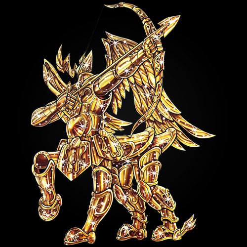
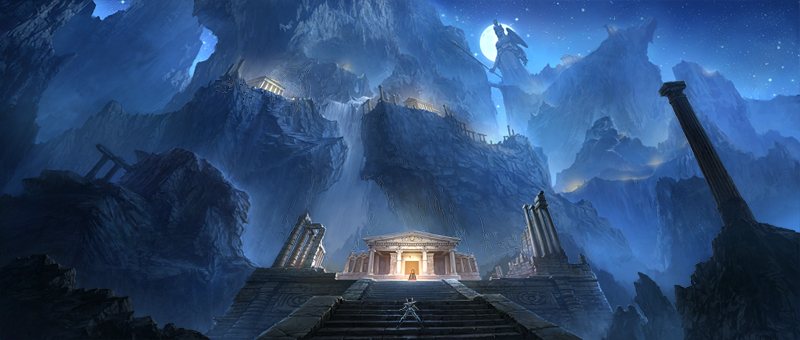

游戏类型
《圣斗士星矢》是一款大型3D多人在线角色扮演MMORPG游戏。
大量漫画中的知名人物也将出现在游戏内：
星矢、紫龙、冰河、瞬、一辉等青铜圣斗士，以及魔铃、奥路菲等白银圣斗士和童虎、史昂、修罗、撒加等黄金圣斗士都将在游戏内出现。

故事背景
由于前代圣战的惨烈，只有2位圣斗士存活下来（史昂和童虎），而圣战都是每隔几百年就会爆发的。教皇史昂意识到只有88名圣斗士存在，无疑是无法应对未来更激烈的战争，如果再出现大量伤亡，会危及到圣域和雅典娜的安危。于是史昂从上代圣战后,将更多为了成为圣斗士的少年为召集到一起,进行战争训练，将通过了训练但没有获得圣衣的少年们依然留了下来,组成了我们说的雅典娜军团。众人团结在智慧与战争女神雅典娜周围，维护大地的正义和和平，守护地球与人类，与邪恶势力和其他众神的意志觉醒者势力间的战斗。
后来，撒加篡位后，假借史昂的名义，获得了新军团的统领权和继续招募训练的计划。并想把军团慢慢转化为自己的私军。
但是这个充满危机的时代已经来临，面临与海皇和冥王的圣战，还有远古时代与人类竞争的巨人族觉醒。还有希腊神话体系下的诸神矛盾引发的冲突，这些冲突涉及到雅典娜的圣斗士。
在各种预言或者未知的危机最终到来之前，圣域内部又孕育着推翻雅典娜的阴谋。这场阴谋涉及到青铜、白银，甚至最尊贵的黄金圣斗士。但这一切还没有多少人知道，雅典娜转生为谁也没有人知道，但圣域是雅典娜的全权代表，作为一名圣斗士的候补生要听从圣域的安排，为了心中的正义，参加艰苦的训练，虽然没有获得圣衣成为圣斗士,但成为了雅典娜军团中的一名圣斗士卫兵；为了保护世界，与圣斗士们一同参与一次又一次的圣战。

《圣斗士星矢》产品简介
大型3D多人在线角色扮演MMORPG游戏《圣斗士星矢》由完美世界制作，游戏采用自主研发Angelica3D引擎强化DX版，丰富的材质调节能力和动态光影贴图效果，表现出逼真写实的远近距离感。史诗级剧情CG过场及动作实体捕捉技术应用，使游戏中的技能渲染强化打击感增强，为三维可视化领域提供了一个全新的渲染和操作方式。游戏取材于集英社版《圣斗士星矢》漫画，从人物设定到场景的渲染均保持了极高的创作水准。通过熟悉的背景和熟悉的圣斗士引起玩家共鸣，以熟悉的故事为切入点，让玩家在游戏中感受丰满的神话世界。丰富的游戏内容，精美的圣衣外观满足玩家对圣衣的憧憬，完善的社会系统，体验情、仇、恩、友谊、手足的感情。